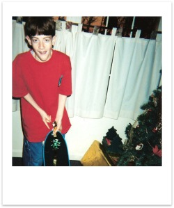
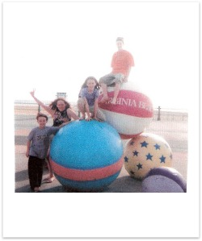

Eighth Grade (01'-02' - Age 13)
As far as school goes things were pretty much the same in the eighth grade. New classes and teachers, but overall it was the same routine. One event that does stand out in my mind is learning about the terrorist attacks on September 11th. I first heard the report about the planes in New York in my science class. Most of the class has already arrived and were sitting in their usual seats when my science teacher frantically came running into the room. She asked if we had heard about the planes crashing in New York, which none of us had, and then rushed to turn on the news. Throughout the day in all our classes we kept checking the TV's pick up any new developments, and little by little we learned more about the situation. I remember them talking about how firefighters from the D.C. area had been called up to help in New York, and wondering about my Dad when I heard up WTC towers collapsing and trapping some of the rescue workers. My Dad was a firefighter at Dulles airport at the time, but luckily didn't end up being called to the NY site or to the Pentagon. It was a shocking and kind of surreal, but honestly at the time I definitely didn't fully understand the magnitude of the event.
On a lighter note, another big event for me that year was winning the school's checkers tournament. We were allowed to nominate a student in each class to enter the competition, and I was able to convince the class to nominate me. It had been years since I had last played, but my family had played lots of board games when I was younger and I usually had done pretty well. I had played countless times against my Mother—and let me tell you—she was a ruthless tactician, so I was prepared for anything. I went into the competition feeling confident, and game after game I knocked out my opponents. I remember there was one match, against a tiny girl from the 6th or 7th grade who put up a good fight, but most every one else I quickly mowed down. By day's end I was declared the school's champion. It was proud day for me.
It was in the eighth grade that Logan and I really started getting into skateboarding, and this became our biggest pastime and focus on into our first couple years of High School. We started wearing all of the cool skateboarding brands like Hurley, Element, D.C., Volcom and others, started watching skateboard videos, playing the Tony Hawk Pro Skater video games, and literally would spend hours each day trying to learn new skateboard tricks. It was during this time that another really close friend of mine, Josh Menendez moved into the ward with his family. He started skateboarding and hanging with us a lot, so the three of us become close friends.
I remember when Josh and I made our first skateboarding video, using a dumpy little black and white security camera that his Dad previously had rigged up to monitor the front door at his house. It didn't actually have the ability to record, so we rigged it up to a VCR, threw in an empty tape and then lugged the whole setup around as we tried to record. Watching it a few years or even months later was hilarious to us, because at the time there weren't many tricks we could do. The biggest were a few ollies over another skateboard, some pop-shovits, and a few board slides on our homemade grind rails.
During the spring of that year my Dad had to travel to Virginia Beach for some disaster safety classes, and so our family took a vacation there for a week. It was the first time we had gone anywhere as a family for a long time, and I hadn't been to a beach since we'd taken our last visit Florida before my grandmother passed away, so I was especially excited. Sadly though, this trip didn't go as smoothly as we had hoped.
As my mother described, “It was a comedy of errors that should never be repeated.” We made the drive over in our junky old mini-van, which Taylee and I had named “the momma's boy warrior,” and while I don't remember it being a horrible drive, it certainly wasn't the most comfortable trip ever, and we were by no means riding in style. Our apartment for the week was beach front, but the weather was cold, windy, and rainy the entire time so we were unable to enjoy the beach as I would've liked. We were all starting to get a bit older and had our own ideas as to what we wanted to do, so we tried to compromise and do a little bit of everything. Taylee wanted art and culture, I wanted to go skateboarding, Shawn just wanted to swim in the pool, and I guess Jace was more or less just along for the ride. For Taylee, we went to a bird sanctuary which bored the rest of us to tears. Next we drove out to where there was supposed to be a skatepark, looked around for several minutes, and then finally learned that it had burnt down a few months before. Instead we went to go play at this park, and I ended up smashing my head on a beam and just about knocked myself out.
One evening Dad took Shawn, Jace and I to go see the movie Ice Age, which was great, but Jace overdid it with the popcorn a little bit, so we suffered some disgusting consequences that night. All of us kids were sleeping together in one bedroom, and our parent in another, but apparently Dad was snoring extra loud so Mom moved into the room with us. Sometime in the middle of the night Jace started throwing up, landing some in Shawn hair. She of course proceeded to freak out, whipped her hair around and shared some of it with me. Taylee remained unsprayed but was still pretty ticked off, so she went and slept in the living room the rest of the night. Needless to say, we haven't been on a family vacation since.
Continue to "Freshman Year" >>